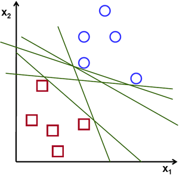
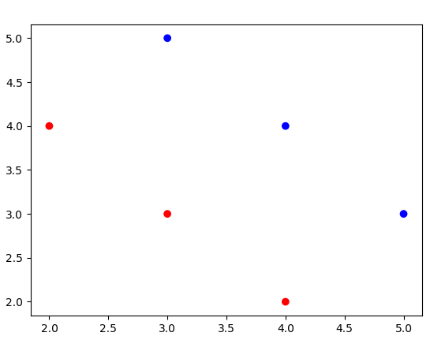

The goal of this tutorial is to implement SVM from scratch while explaining it.
I highly recommend the reader to firstly watch lectures which are given by Andrew Ng and Patrick Winston. While Andrew Ng provides very good intution, Patrick Winston shows the beauty of underlying matematics on SVM.
Table of ContentsIntro to SVM
SVM is one of the most popular approach in Machine Learning. Almost every AI book contains a chapter for SVM. There are many reasons why SVM is so important. Following properties of SVM are important ones.
- SVM construct a maximum margin classifier, which finds a decision boundary with the largest distance to training instances. A classifier with the largest distance to training instances generalize well. According to VC Analysis, large margins imply smaller VC Dimension, smaller Growth function. Since SVM construct a maximum margin classifiert, it generalizes well, short expalanation by Professor Yaser Abu-Mostafa.
- Kernel Machines can be used in SVM. In fact that, SVM needed to wait for 30 years to be acknowledge as one of the powerfull tool in Machine Learning and show that it does better job in MINST data base than Neural Networks.
- Finding a model parameter is CONVEX optimization problem as apposed to many other algorithms, such as Neural Networks.
[NOTE TO ME start with book of AI PETER Norwig].Page 744 Suppose the training data is linearly separable which means that there is at least one "line", one decision boundary such that y_i(wTx_i+b)>0 for all data points (x_i,y_i). I assumed that reader watch the videos and knows notation.
This question that I would like to ask reader which to choose if more than one decision boundary exists. One of them should be "better" than other. As it is known that Perceptron Algorithm will find any decision boundary which separetes correctly classifies all data points. SVM will not only find a decision boundary, it will find the "best" one.
It is proven that decision boundary is better than others in terms of their margin, closest data points to them. Therefore SVM tries to maximaze margin while correctly classifiying them

Visualize SVM
